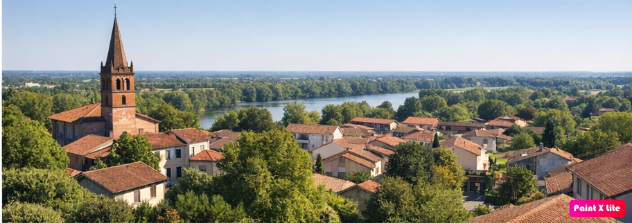
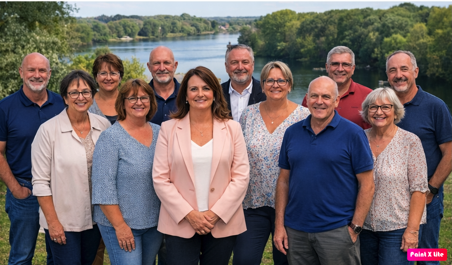

Notre engagement
La liste « Bien Vivre à Roquettes », menée par Marlène Filippini, propose un projet municipal fondé sur l’écoute, la solidarité et l’intérêt général. Nous souhaitons construire avec vous un avenir fidèle aux valeurs du bien vivre dans notre commune. :contentReference[oaicite:12]{index=12}
Nos priorités
Télécharger le programme completL’équipe
Une équipe de femmes et d’hommes roquettois engagés, présents sur le terrain et à l’écoute des habitants pour répondre aux besoins quotidiens.
Contact
Email : contact@bienvivrearoquettes.fr